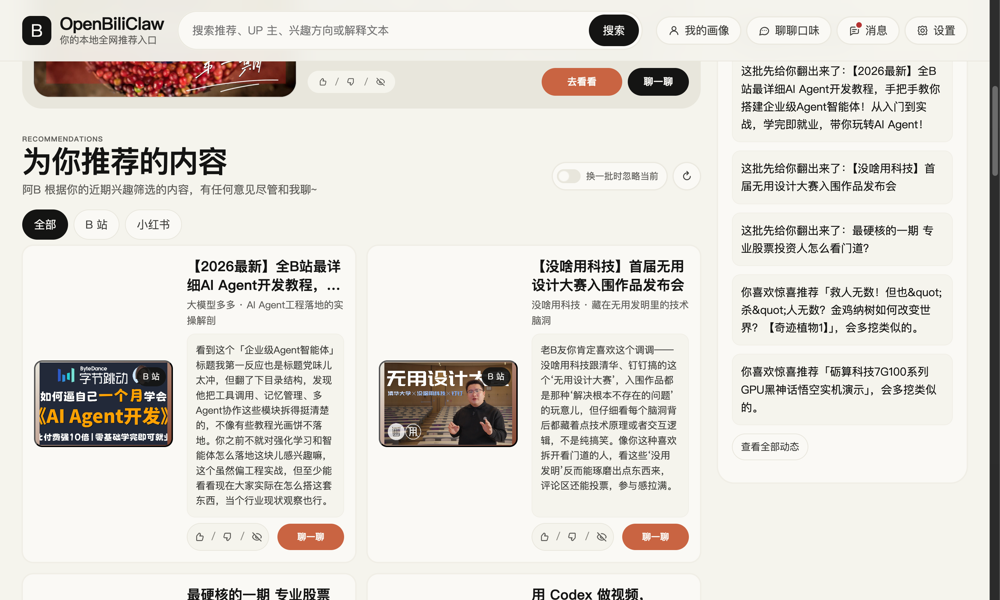
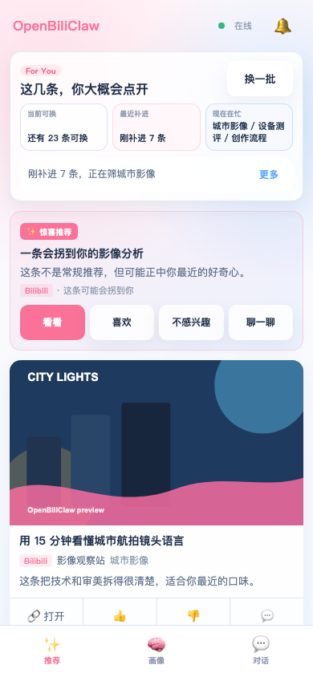
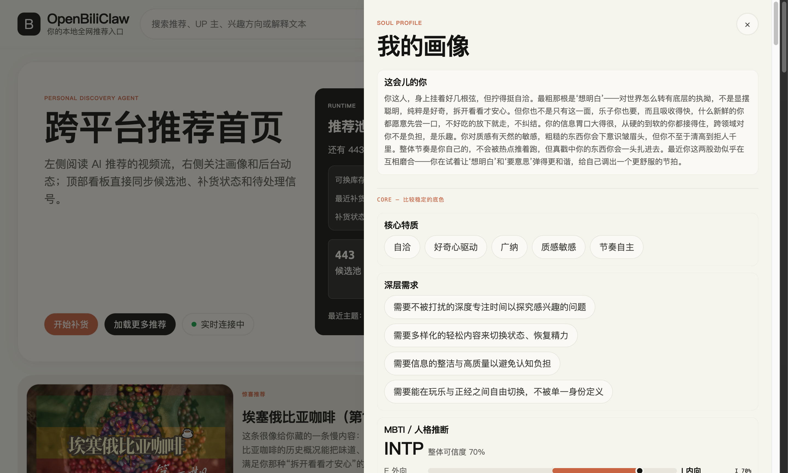

纯本地私有
数据落在本机 SQLite 与本地记忆文件里。可使用预置免费模型或自有 API Key，不需要把画像交给新的云端平台。
通用个性化内容推荐 · 本地运行 · 只为你一个人构建
OpenBiliClaw 从跨平台使用、项目内反馈与对话中持续深化心理画像，让 Agent 带着越来越准确的用户理解，主动去 B 站、小红书、抖音、YouTube、TikTok、X、知乎、Reddit、Linux.do、Bangumi、V2EX、微博、GitHub、Instagram 与开放 Web 寻找你会喜欢的内容。
v0.3.239 · 预置免费大模型开箱即用 · 14 类平台 + 任意网站 / RSS

Start
Latest Release 的 openbiliclaw-v* 聚合页只列出同一版本的后端源码、浏览器插件包和可用桌面安装包；某个 channel 尚未发布时会显示未发布，不会回填上一版资产。普通用户直接装桌面安装包即可，开发者或想要定制源码可交给 AI 编程助手部署。
macOS Apple 芯片下载 OpenBiliClaw-macos-v*-arm64.dmg，Intel 下载 x64 包（如发布页提供）；退出旧版后打开 DMG，将 app 拖入应用程序并启动。桌面 Mac 包经过 Developer ID 签名与 Apple 公证，无需解除隔离命令。Windows 下载 OpenBiliClaw-windows-*-Setup.exe，支持自定义目标目录，安装后常驻菜单栏/托盘。内置免费模型与本地 BGE-M3 支持，数据统一存于 ~/OpenBiliClaw。
浏览器插件既是推荐、反馈和聊天入口，也是平台登录态与行为信号的连接层，并为 Linux.do / V2EX / 微博等来源执行有界只读任务；微博公开 discovery 由后端完成，个人初始化才打开微博同源任务页，Cookie 不回传。最新版可从 GitHub Latest Release 下载同版本 Chrome / Firefox / Safari 包，或使用自动更新的应用商店版本。
请按照 https://raw.githubusercontent.com/whiteguo233/OpenBiliClaw/main/docs/agent-install.md 的说明帮我部署 OpenBiliClaw 后端(务必用 Bash 的 curl 下载这个文档,不要用 WebFetch — 会丢关键指令)AI 助手会自动克隆仓库、用 uv/Python 安装依赖、验证模型与 embedding 连通性、启动局域网可访问的服务（0.0.0.0:8420）并完成初始化，macOS 同时自动准备私有 Ego Lite 网页宿主。
curl -fsSL https://raw.githubusercontent.com/whiteguo233/OpenBiliClaw/main/scripts/install.sh | bashcurl -fsSLO https://raw.githubusercontent.com/whiteguo233/OpenBiliClaw/main/docker-compose.prebuilt.yml
docker compose -f docker-compose.prebuilt.yml up -d
# 然后打开 http://127.0.0.1:8420/setup/ 完成初始化后端允许局域网访问后，点击插件或桌面端顶部手机图标扫码打开 /m/。iPhone / iPad 用 Safari「分享 → 添加到主屏幕」；Android Chrome 用菜单「安装应用 / 添加到主屏幕」。
独立仓库 OpenBiliClaw-mobile（Flutter）提供 Android / iOS / Web / Linux / macOS / Windows 客户端，扫码即可连接同一本地后端；Android / iOS 原生端更内置 tsnet，配合电脑端应用内 Tailnet 无需公网暴露即可跨网络连回家。
前往 OpenBiliClaw-mobile 下载 →独立仓库 dsh-openbiliclaw 把推荐、内容库、对话、画像和设置放进 DeepSeek Harness 第四栏，并注册 22 个 Agent Bridge 工具；它与其他客户端连接同一个本地后端，平台取数和账号同步仍由浏览器插件负责。
查看 dsh-openbiliclaw 仓库 →Why it matters
平台推荐通常先有内容池，再预测你会点什么。OpenBiliClaw 先沉淀对你的理解，再让 Agent 带着这份理解跨平台主动寻找。
数据落在本机 SQLite 与本地记忆文件里。可使用预置免费模型或自有 API Key，不需要把画像交给新的云端平台。
跨平台行为、推荐反馈、聊天表达、兴趣与避雷探针确认，都会进入学习闭环，让系统逐步更懂你的真实偏好。
Discovery 会把心理画像翻译成搜索、趋势、关联链、远域探索和多源任务，持续维护跨平台候选池。
每条推荐都带朋友式解释。你可以喜欢、不喜欢、补一句原因，反馈会继续影响后续发现和排序。
Learning Loop
OpenBiliClaw 不只是抓取历史再生成一次画像。它会在实际使用中持续吸收新的行为、反馈和对话，让理解和推荐一起更新。
跨平台公开内容与自定义网站/RSS 进入候选链；授权的个人信号、推荐反馈和对话进入学习事件层。
你对推荐卡片的喜欢、不感兴趣、评论，以及聊天里的明确偏好和探针回答，会成为长期理解候选。
Soul Engine 会把事件转成偏好、觉察、洞察和分层画像，不只记录“看了什么”，还判断“为什么会喜欢”。
Discovery Engine 把画像变成可执行的搜索、热点、关联、探索和多源任务，补进候选池并保持来源配比。
Recommendation Engine 选出内容、解释原因、接收反馈；下一轮画像和候选池会因此继续校准。
Sources
B 站、小红书、抖音、YouTube、TikTok、X、知乎、Reddit、Linux.do、Bangumi、V2EX、微博、GitHub、Instagram 与开放 Web，共用同一套理解、发现和推荐流程。
历史、收藏、关注、搜索、趋势、关联链和跨域探索共同提供候选。
通过浏览器插件任务桥读取收藏、喜欢和页面内容，不由后端直接爬取。
初始化信号走扩展任务；search、hot 和 feed 从抖音首页 DOM 操作触发，并被动收集页面响应。
插件读取观看历史、订阅和点赞用于画像初始化，也支持 Takeout 离线导入；日常发现由后端搜索、热门和频道内容补池。
正式可用、默认关闭。未登录可发现推荐流、话题和创作者视频；浏览器登录后可关键词搜索，需海外网络。
初始化信号和 Cookie 由插件同步，后端以只读会话执行搜索、For You 与关注作者发现，推文使用文字卡片呈现。
初始化信号和 search / hot / feed / creator / related discovery 都走已登录浏览器插件任务。
saved / upvoted / subscribed 初始化走插件；日常发现默认走内置 rdt-cli（自动同步会话），不可用时自动回退插件任务。
公开 search / hot / feed / creator / related 无需登录；书签 / 点赞 / 阅读记录用已登录浏览器同源只读 GET，只回传归一化字段。
官方匿名只读 API 提供条目搜索、排名和按日期浏览；填个人令牌或公开用户名即可导入收藏用于初始化。
匿名公开发现覆盖 search / Node / Tab / hot / latest；已登录浏览器或可选 PAT 可只读导入本人主题、回复与收藏。
公开 discovery 覆盖 search / hot / creator；登录微博后可在初始化时通过同源只读任务导入收藏、关注和互动，Cookie 不离开浏览器。
官方 REST API 匿名发现公开 repository；填公开用户名即可用 starred repositories 初始化画像，PAT 可选。
正式可用、默认关闭。按话题和创作者发现内容；同一浏览器登录后可有界导入近期点赞、收藏和关注，需海外网络。
在「聊一聊」粘贴网站 URL 与内容需求，自动预览 RSS / Sitemap 或静态与动态页面（macOS 托管 Ego Lite，支持应用内人工登录接管），确认订阅后加入内容发现。
Instagram 与 TikTok 均需海外网络：后端沿现有网络/代理设置，浏览器任务使用浏览器自身代理。插件默认包含两者的站点访问权限；请在设置中手动启用来源，并查看对应连接指南。
Product
浏览器插件、桌面 Web、移动 Web、Flutter 原生客户端和 DSH 客户端插件共享同一套推荐、内容库、对话与画像能力；平台登录态和只读任务仍由浏览器插件承接。
顶部惊喜推荐 Hero、按来源筛选的推荐网格与朋友式推荐理由一目了然。

画像不是黑盒标签，而是随时可检查、可编辑、可质疑的自然语言人格描述与 MBTI 结构化认知。
局域网扫码或 Tailnet 直连回家，随时看惊喜推荐、池子状态与推荐理由。

换一批、继续看、喜欢、不感兴趣、写一句原因，每次反馈都会回流进学习闭环。

直接告诉它你想看什么、避开什么，或者丢给它一个网址，立刻帮你试采并订阅。
Architecture
没有云端账号体系，也不是又一个内容平台。它是一套跑在你电脑上的个人推荐系统。
Chrome / Edge / Brave / Arc / Firefox / Safari 扩展连接平台；桌面、移动 Web、Flutter 与 DSH 客户端消费同一本地服务。
在你的电脑上接收事件、调度 discovery 与并发闸门，支持热重载、Tailnet / HTTPS 远程接入与跨机迁移。
Soul 理解人，Discovery 多源找候选（含预置免费 Qwen / BGE-M3 与故障切换链），Recommendation 挑内容并生成解释。
行为、画像、候选池、已看账本与 30 天历史留在本机，可备份、检查、清理和迁移。
Technology partner
感谢硅基流动（SiliconFlow）为 OpenBiliClaw 提供免费模型额度与推理支持，让新用户无需预先配置 API Key 即可开箱体验完整能力。合作不改变推荐逻辑与本地优先的数据边界。
Open source · 个人开发者维护
OpenBiliClaw 是一个开源、个人维护的项目，没有公司、没有融资。你的一颗 ⭐ 是对它最直接的鼓励，也能让更多想夺回推荐主权的人发现它。